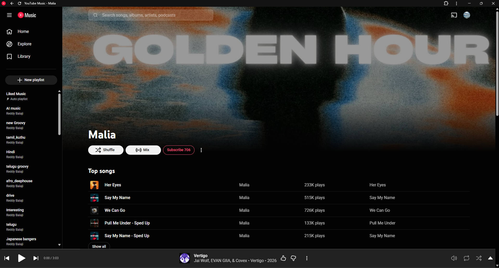
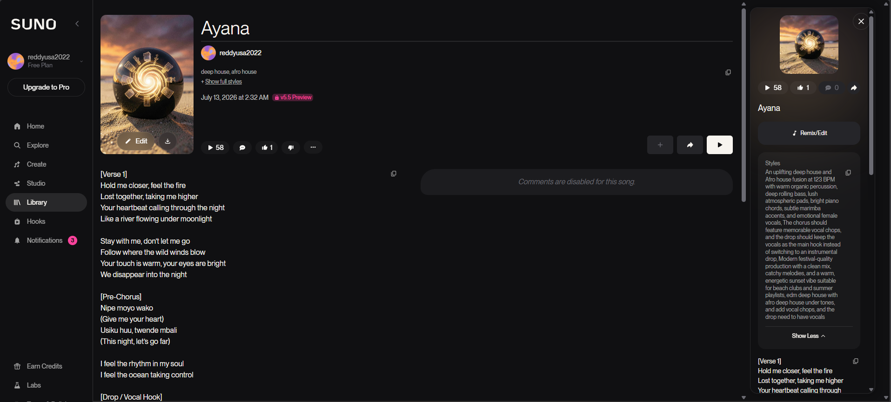

I Thought I Found a New Artist.
Then I Tried Suno.
I recreated the sound of several rapidly growing electronic-music channels using one prompt—and the result raised questions about disclosure, authenticity, and the future of streaming.

I was not looking for AI-generated music. I was simply listening to deep-house and Afro-house playlists when one song caught my attention. It sounded polished and catchy, but something felt unusual.
The track was about two minutes long. The artist’s other songs had similar durations. The vocal delivery felt familiar across multiple releases, while a few pronunciations, transitions, and background sounds had the slightly unnatural quality I associate with generated audio. At first, I assumed it was simply a production style. Then I started looking more closely.
The pattern I began noticing
Across several artist pages, I noticed short songs, frequent releases, sped-up and slowed-down versions, limited public identities outside streaming platforms, and recurring vocal or arrangement artifacts. Some songs already had hundreds of thousands of plays. I could not find an obvious AI label on the pages I reviewed.
None of this proves a song is AI-generated. Human producers can make short tracks, heavily process vocals, work anonymously, and release music quickly. The combination simply made me curious.
The channels I reviewed included ZIØME, Hyze, Malia, Nalys, Elian, Elysia Vale, Medo, OFF ME, mxbeats, Livam, and Pio. Several releases also appeared to have credits associated with Zime Media AB. That may establish a business or distribution relationship; it does not establish how the music was created.
Could an AI tool really sound this convincing?
I found Suno and decided to run a small experiment. I asked ChatGPT to help develop lyrics, described the genre, tempo, instrumentation, mood, and structure, and generated a track titled Ayana.

The result surprised me. It had convincing female vocals, a polished mix, a memorable hook, vocal chops, and the emotional atmosphere common in commercial deep-house releases. It was not perfect, but a casual listener could easily assume a singer, songwriter, producer, and engineer had worked together on it.
The lyrics also exposed the limits. Some lines were funny in ways I did not intend, and others did not make much sense at all. “Underneath the African sea,” for example, sounds evocative until you stop and ask what it means in context. That unevenness became part of the experiment: the music could feel commercially polished even while the writing occasionally gave the game away.
Parts of the voice and production style sounded remarkably similar to the music that triggered my investigation. That is still not attribution. Other generative platforms, sample libraries, vocal-processing tools, or conventional production techniques could produce comparable results. What the experiment demonstrated is broader: convincing commercial-style music can now be produced with a prompt and a few minutes.
“Ayana” — the song and video I generated for this experiment using Suno, with the prompt and lyrics disclosed below.
The issue is not AI music. It is undisclosed AI music.
I am not opposed to using AI in music. Musicians have always adopted new tools: synthesizers, drum machines, sampling, Auto-Tune, virtual instruments, and algorithmic composition. Generative AI can help independent creators experiment and express ideas they could not otherwise produce.
The concern begins when listeners are led to believe they are hearing a conventional human artist without being told that the voice, instrumentation, lyrics, or entire recording may have been generated. An AI persona is not automatically deceptive—but presenting one without meaningful disclosure can be.
Why this matters
Listener trust
When a profile presents a name, voice, artwork, and growing catalog, listeners naturally assume some identifiable artist or creative team exists behind it. People should be given enough information to evaluate that identity.
Competition with human musicians
Human artists spend years developing their voices and craft. They now compete for the same recommendations, playlists, and royalty pools against catalogs that may be generated at enormous speed.
Recommendations and scale
Streaming systems do not necessarily distinguish between a song created over months and one generated in minutes. If short, frequently released tracks perform well, there is a strong incentive to produce them in bulk.
Accurate credits
Listeners should be able to tell whether lyrics were human-written or generated, whether a singer was real or synthetic, how the instrumentation was made, which system was used, and who made the final creative decisions.
What I can—and cannot—conclude
Based on listening patterns, catalog structures, public artist-page information, and my Suno experiment, I believe these channels deserve closer investigation. I cannot conclude that a named artist or song is AI-generated without confirmation, reliable creation metadata, project records, a platform disclosure, or stronger independent evidence.
These catalogs show patterns consistent with current AI-music production, yet listeners are given little information with which to evaluate that possibility.
Audio artifacts alone are not proof. Modern vocal processing can sound artificial, and current AI models can sound natural. That distinction matters.
Listeners deserve useful labels
A practical disclosure could separate the ingredients instead of forcing every track into a simple “AI” or “not AI” category: AI-assisted production; human-written lyrics; AI-generated vocals; AI-generated instrumentation; human-directed arrangement and editing.
Platforms could also let listeners decide whether generated music appears in recommendations. That would not ban AI music. It would give audiences control—and let the work compete honestly.
AI music is already good enough to disappear into the catalog
My experiment did not require advanced production knowledge. Within minutes, I had a polished track close to music already receiving significant attention. The lyrics sometimes made me laugh and sometimes made no sense, but the sound itself was convincing.
The question is no longer whether AI will eventually make convincing music. It already can. The more urgent question is whether listeners will be told when it does.
Transparency and AI-use disclosure
This article was written by Reddy Balaji Madha with drafting and editing assistance from ChatGPT. I supplied the observation, investigation notes, screenshots, channel links, experiment, production prompt, lyrics, and personal conclusions. ChatGPT helped organize the material, improve readability, and keep observations separate from claims.
I reviewed and approved the final article. ChatGPT was not used as an AI-music detector, and its output is not forensic evidence. The experimental track “Ayana” was generated using Suno.
View the exact Suno production prompt
An uplifting deep house and Afro house fusion at 123 BPM with warm organic percussion, deep rolling bass, lush atmospheric pads, bright piano chords, subtle marimba accents, and emotional female vocals, The chorus should feature memorable vocal chops, and the drop should keep the vocals as the main hook instead of switching to an instrumental drop, Modern festival-quality production with a clean mix, catchy melodies, and a warm, energetic sunset vibe suitable for beach clubs and summer playlists, edm deep house with afro deep house under tones, and add vocal chops, and the drop need to have vocals
View the exact lyrics used for “Ayana”
[Verse 1] Hold me closer, feel the fire Lost together, taking me higher Your heartbeat calling through the night Like a river flowing under moonlight Stay with me, don’t let me go Follow where the wild winds blow Your touch is warm, your eyes are bright We disappear into the night [Pre-Chorus] Nipe moyo wako (Give me your heart) Usiku huu, twende mbali (This night, let’s go far) I feel the rhythm in my soul I feel the ocean taking control [Drop / Vocal Hook] Ayana, ayana Take me deeper, take me higher Ayana, ayana We are dancing with the fire Sawa, sawa Feel the love inside the sound Sawa, sawa When the drums are all around [Verse 2] Your shadow moving next to mine Two hearts beating out of time The stars are falling from the sky But tonight we learn to fly Moyo wangu, stay with me (My heart, stay with me) Underneath the African sea Through the rhythm, through the flame I will call your name again [Outro Hook] Ayana, ayana Moyo wangu, stay forever Ayana, ayana We are one beneath the weather
View my original input to ChatGPT
AI Music: in Youtube and spotify with millions of views and no where in the channels or the pages indicate that its AI generated so. recently I was listening to music and came across a song and looked at the producer and noticed a pattern like all the songs were around 2 mins and also the voices and some odd artefects and the channels and songs all released after April or may so I went it to google for AI models which are this good at music and came across the SUNO v5.5 and tried it and created a song and video attached if you want to listen and the voice seems very similar to the songs and with further digging came across all the channels with similar patterns and the same producres have Spotify and most of them are associated with “Zime Media AB”. I then supplied the channel list, the complete Suno prompt and lyrics above, a playlist link, and asked ChatGPT to create a blog-post structure.